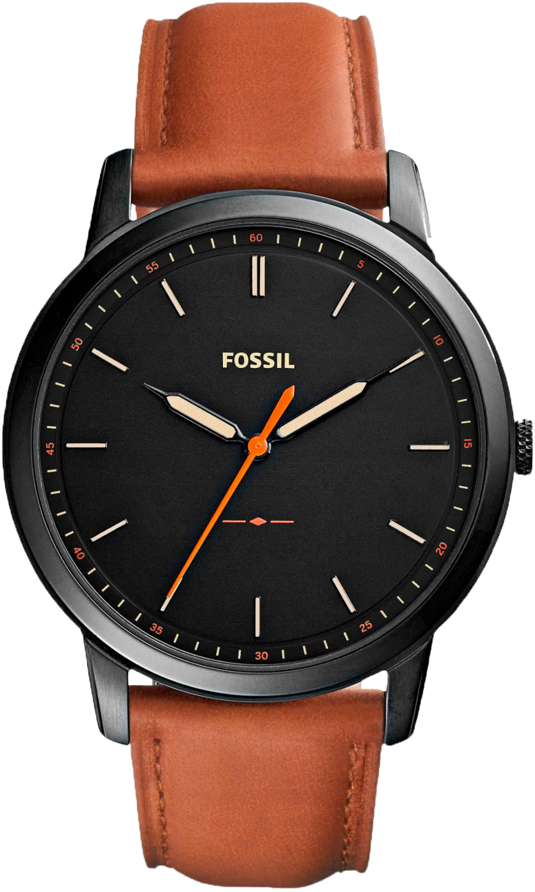

Experience
Fashion and Technology
Fossil's new collection of Hybrid and Touchscreen Smartwatches.
See the collection

Fossil's new collection of Hybrid and Touchscreen Smartwatches.
See the collection


-Jill Elliott, Chief Creative Officer